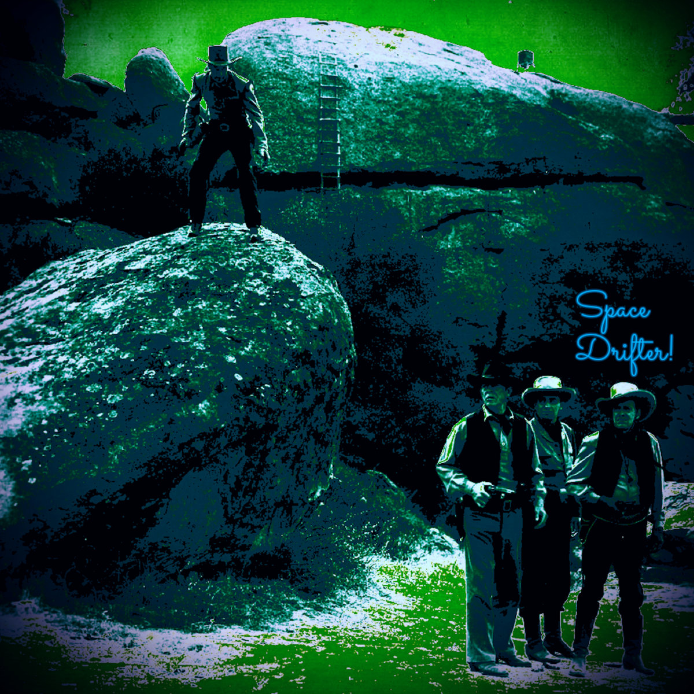

About
Sky Ranch Productions is an artistic collective led by film/music producer Gareth V. Collaborations include multiple music and film genres with an expanding group of contributers. Sky Ranch specializes in turning half-baked ideas into full realized works of art. With over 15 years in music production and 5 years in cinematography, all aspects of the creative process are supported by experienced individuals.
